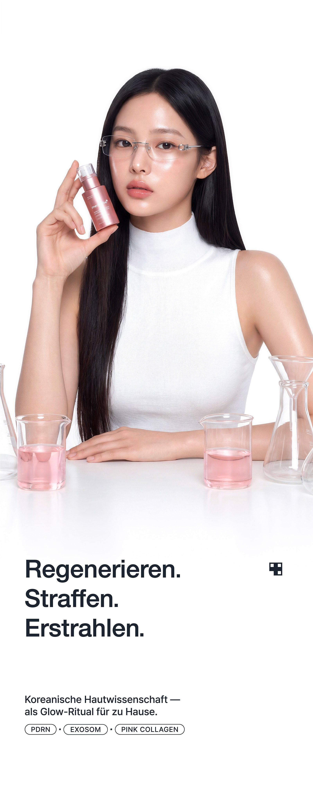
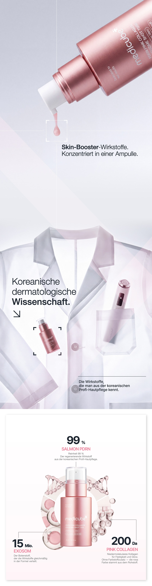
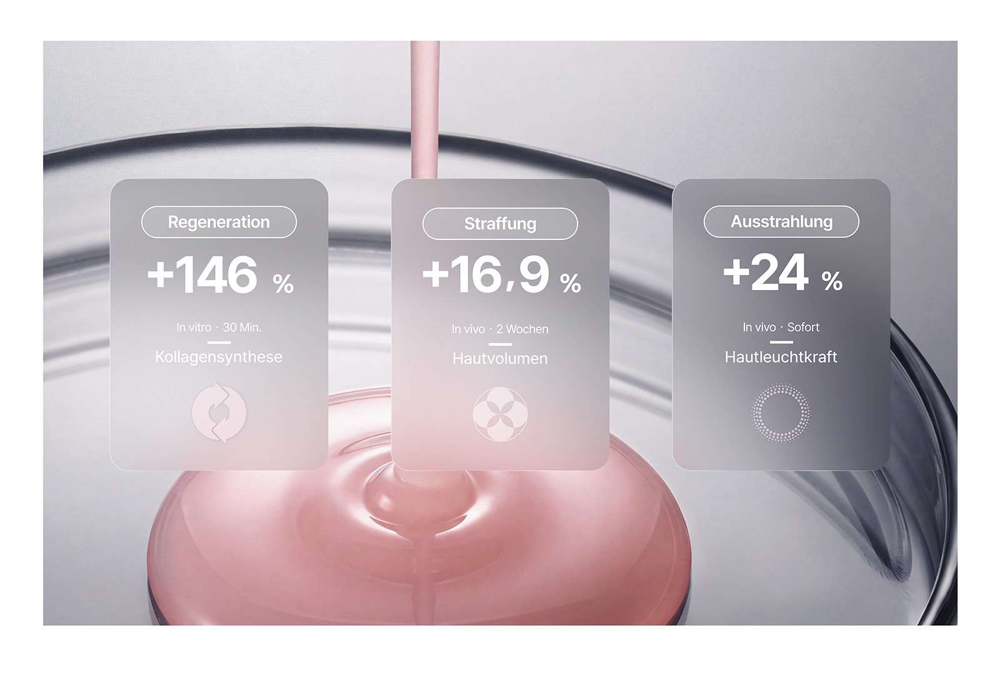
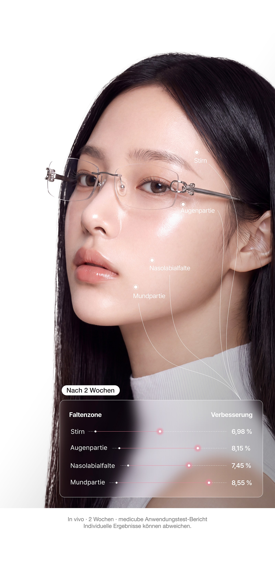
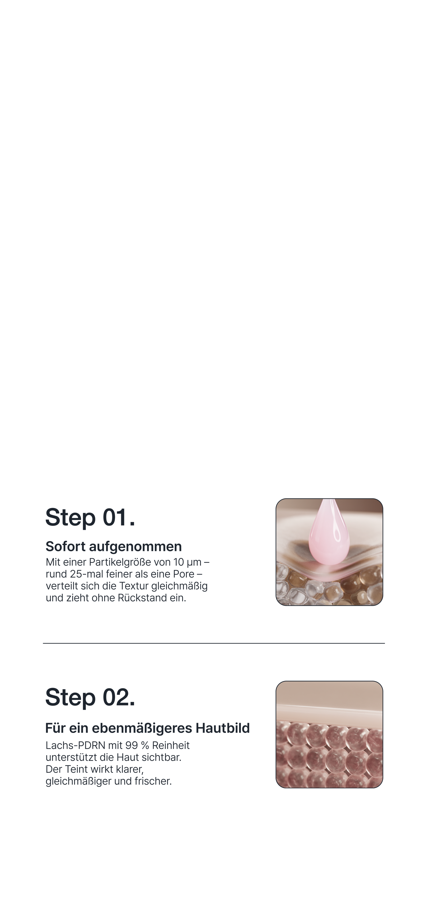
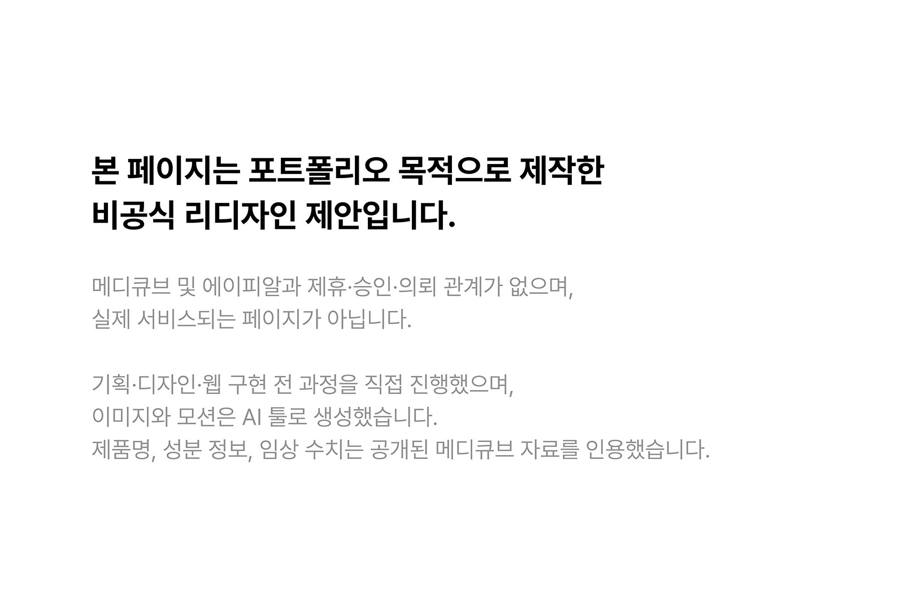

Ziehen

Anwendung
Abends, als erster Schritt Ihrer Pflegeroutine.
- AuftragenNach der Reinigung auf die trockene Haut. Geben Sie eine kleine Menge auf und verteilen Sie sie unter Aussparung der Augen- und Lippenpartie.
- EinklopfenKlopfen Sie die Ampulle mit den Fingerkuppen sanft ein, bis sie vollständig eingezogen ist.
- AbschließenVersiegeln Sie mit Ihrer gewohnten Feuchtigkeitspflege.
- Ein leichtes Prickeln kann länger anhalten. Das ist eine normale Reaktion der Wirkstoffe.
- Augen- und Lippenpartie aussparen.
- Die Formel enthält Retinol. Verwenden Sie tagsüber zusätzlich einen Sonnenschutz.
- Bei empfindlicher Haut empfehlen wir vorab einen Patch-Test.
Anwendungsrhythmus
Die Exosome Shot Linie — zwei Konzentrationen, ein Rhythmus.
- 2000für die tägliche Anwendung
- 7500für die intensive Pflege
| Rhythmus | Mo | Di | Mi | Do | Fr | Sa | So |
|---|---|---|---|---|---|---|---|
| Einsteiger | |||||||
| Fortgeschritten | |||||||
| Experte |
- Exosome Shot 2000
- Exosome Shot 7500
Inhaltsstoffe & Clean
Formuliert ohne
- Parabene
- Sulfate
- Mineralöl
- Künstliche Farbstoffe
Alle Inhaltsstoffe (INCI)
Water (Aqua), Butylene Glycol, Dipropylene Glycol, Glycerin, Niacinamide, Sodium Polyacrylate, 1,2-Hexanediol, Calcium Aluminum Borosilicate, Hydrolyzed Sponge, Caprylyl Glycol, Cetearyl Olivate, Phenyl Trimethicone, Sorbitan Olivate, Glyceryl Acrylate/Acrylic Acid Copolymer, Ethylhexylglycerin, Adenosine, Disodium EDTA, PVM/MA Copolymer, Panthenol, Lactobacillus Extracellular Vesicles, Cyanocobalamin, Sodium DNA, Milk Extracellular Vesicles, Collagen Extract, Macadamia Ternifolia Seed Oil, Caprylic/Capric Triglyceride, Alcohol, Hydrogenated Lecithin, Polysorbate 20, Retinol, Chondrus Crispus Extract, Cholesterol, Sodium Hyaluronate, Brassica Campestris Sterols, Polyglyceryl-10 Laurate, Ceteth-3, Ceteth-5, Tocopheryl Acetate, Hydrolyzed Elastin, Potassium Cetyl Phosphate, Hydroxypropyltrimonium Hyaluronate, Acetyl Tetrapeptide-5, Palmitoyl Pentapeptide-4, Sodium Acetylated Hyaluronate, Hydrolyzed Hyaluronic Acid, Palmitoyl Tripeptide-5, Hyaluronic Acid, Sodium Hyaluronate Crosspolymer, Hydrolyzed Sodium Hyaluronate, Potassium Hyaluronate
Häufige Fragen
- Nach dem Auftragen prickelt die Haut leicht. Ist das normal?
- Die Formel enthält feine Wirkstoffpartikel natürlichen Ursprungs. Ein Prickeln beim Auftragen ist eine normale Reaktion und klingt in der Regel schnell ab. Passen Sie Menge und Häufigkeit an Ihre Haut an.
- Gibt es Wirkstoffe, die ich nicht gleichzeitig verwenden sollte?
- Grundsätzlich nein. Bei Produkten mit Säuren (AHA, BHA, PHA), Retinol oder hoch dosiertem Vitamin C kann es je nach Hauttyp zu Reizungen kommen. Führen Sie in diesem Fall vorab einen Patch-Test durch.
- Ist die Ampulle für empfindliche Haut geeignet?
- Die Formel ist dermatologisch getestet und für empfindliche Haut geeignet. Bei sehr reaktiver Haut beginnen Sie am besten mit der abendlichen Anwendung und steigern die Häufigkeit über zwei Wochen.
- Wie ist das Produkt geprüft?
- Dermatologisch getestet. Entwickelt und hergestellt nach der EU-Kosmetikverordnung (EG) Nr. 1223/2009.
